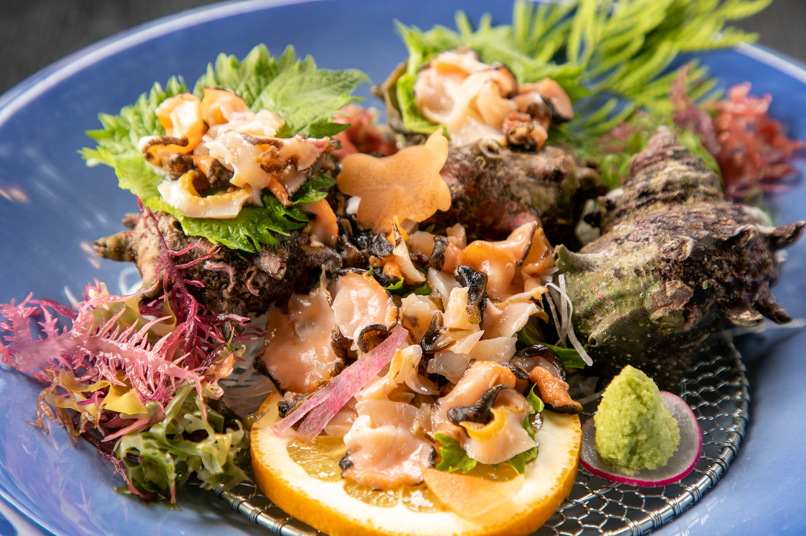

波津は、美味しい旬が集まる中心地。波津は、海、山の食材が
豊富に揃う好立地です。四季折々の食材が、新鮮なまま
届けられ、料理人として腕の鳴る場所です。

素材・イカ・ふぐへのこだわり
ご夕食
極み会席

当館の料理長がもてる限りの技を尽くす最上級の会席、極み会席。
「その時期、その日ごとに最も美味しい食材」で会席をおつくりするため、あえて、お品書きはございません。 漁港直送の「獲れたての海の幸」「山の幸」を活かしその日お泊まりいただくお客さまのためだけに「最高峰の会席」をつくり上げます。 さらに、人気の贅沢逸品鮑のしゃぶしゃぶ」もご用意。新鮮だからこそ味わえる「コリコリ食感」と「旨味」をご堪能ください。
Plan
【極み会席】お品書きは＜料理長おまかせ＞その時期仕入れる、
豪華食材で彩る当館「最上級の会席」
プラン詳しく見る
豪華3大海づくし


天然魚姿造り＋鮑＋伊勢海老、「海の幸」で贅沢ざんまい。
宿自慢の「漁港直送の魚料理」の中でもワンランク上の「高級食材」が大集合、豪華3大海づくし。 贅沢するなら欠かせない「天然魚姿造り」「鮑」に加えて「伊勢海老」をご用意いたしました。 旅先での料理にはこだわりたい食での贅沢をご賞味ください。
Plan
【豪華3大海づくし】＜天然魚姿造り＋鮑＋伊勢海老＞「高級食材」大集合！
「海の幸」で贅沢ざんまい
プラン詳しく見る
2大グルメ会席


天然魚姿造り＋国産牛80g、「お魚」はもちろん「お肉」も堪能。
宿自慢の「漁港直送の魚料理」はもちろん「お肉料理」も食べたい方へおすすめの会席プラン。 「天然魚姿造り」「国産牛の陶板焼き80g」宿自慢の「2大グルメ」が大集合しました。 さらに当館人気の名物料理「旬魚しゃぶしゃぶ」もご用意。しゃぶしゃぶは福岡県岡垣町の特産品である「びわ茶」の茶葉を使った出汁で味わっていただけます。
Plan
【2大グルメ会席】＜天然魚姿造り＋国産牛80g＞「お魚」はもちろん「お肉」も堪能！
どちらも欲張りに
プラン詳しく見る
基本会席


おひとり様ずつ「旬魚刺し盛り」を。新鮮な旬魚に出逢う創作会席。
新鮮な海の幸を中心にお届けする「基本料理」です。おひとり様ずつ「旬魚刺し盛り」をご用意いたします。 さらに当館人気の名物料理「旬魚しゃぶしゃぶ」もご用意。しゃぶしゃぶは福岡県岡垣町の特産品である「びわ茶」の茶葉を使った出汁で味わっていただけます。
Plan
【基本会席】おひとり様ずつ＜旬魚刺し盛り＋名物！旬魚しゃぶ付＞毎朝漁港から直送！
新鮮な魚介を味わう。
プラン詳しく見る
期間限定料理
ふぐ会席
はつしろの冬の自慢は美味しいふぐ料理。何と、ワンシーズン、グループで8,000食以上も出るほどの人気です。
人気の理由は、なんと言っても33cmもの大皿に盛られたとらふぐ刺しのボリューム。
中には、「全員で一皿と思ったふぐ刺しが次々と目の前に運ばれてきて、びっくりした！」と目を丸くされる方もいらっしゃるくらいです。「大皿のふぐ刺しを遠慮なく、独り占めできる」と喜ばれ、毎年冬になると、家族みんなで食べに来られる常連さまも多いです。
「他のお店で食べても、ちょっと物足りない」「満足できない」というお客様にも大変喜ばれています。
【献立一例】 小鉢・前菜・とらふぐ刺・かなとふぐまたは鐘崎天然ふぐの唐揚げ・茶碗蒸し・ふぐちり・
雑炊・香物・果物 ※こちらのふぐ刺しは畜養です。
※２名様以上から承ります。
※個室をご利用の場合は奉仕料を別途いただきます。
（期間限定：10月1日～期間限定）
天然とらふぐ会席
鐘崎漁港の天然ふぐの取引実績を競う、「鐘崎とらふぐフェア」にて2013年から3年連続最高取引実績を収めました。有数のふぐ処理師免許取得者を誇るはつしろ地盤のふぐ会席でふぐの美味しさをご堪能ください。
【献立一例】 小鉢２種・天然とらふぐ刺・揚げ物・ふぐちり・茶碗蒸し・雑炊・香物・デザート
※前々日までのご予約をお願いいたします。 ※２名以上から承ります。
※個室をご利用の場合は奉仕料を別途いただきます。
（期間限定：2月1日〜） ※期間はあくまで予定であり変わる事があります。
ふぐ会席が10月頃〜、天然とらふぐ会席が2月頃〜の期間限定の会席となります。
Reservation
ご宿泊予約はこちらから

ベストレート保証
公式サイトから
の予約がお得!
の予約がお得!
ご宿泊プラン一覧
予約確認・キャンセル
別注料理
別注料理
伊勢海老のお造り
贅沢食材をお造りで。 お造りならではのとろりとした甘い味覚と
プリプリ食感をご賞味ください。
別注料理
鮑のお造り
新鮮な鮑は「旨味」がギュッと 凝縮しています。
コリコリの食感をお造りで ご体感ください。
別注料理
栄螺のお造り
新鮮で大きい栄螺だからこそできる 栄螺のお造り。
磯の味とコリコリとした食感を お楽しみください。
ご夕食
目の前の地元・波津漁港や芦屋漁港から、毎日新鮮な魚介を仕入れ。
1日のはじまりに滋味あふれる朝食を―。 何の魚が出てくるかお楽しみ「日替わり焼き魚」、ほっかほかの「炊き立てご飯」、温かみが詰まった「小鉢」など。 「これぞ、日本の朝ごはん」を感じられるホッと落ち着く和朝食をごゆっくり。
ご朝食
ハーフビュッフェ
新ご朝食のハーフビュッフェ。 「日替わり焼き魚」は海沿い宿ならではの
旬魚を使用しているので鮮度抜群の
お魚料理を朝からご堪能いただけます。